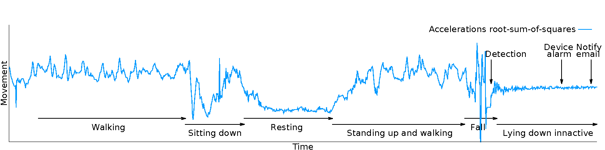

Blue print project
Take your health in hand
A fundamentally scientific approach
The Blue print project relies on recent scientific work and extensive stresstesting to guarantee an optimal quality of service. In parallel, we actively participate on the scientific community by publishing our own work and innovative technologies.
Detecting falls
Detecting the actual fall of a person is a very complex task. Indeed, any kind of detection error may lead to a major consequences, whether they result from an undetected fall (type I error, leaving the person on its own) or the confusion of a normal behavior (e.g. stretching arms, sitting down) for a fall by the system (type II error, leading to an unnecessary intervention). In Blue print, we set up a comprehensive framework to ensure that all falls and only actual falls are successfully detected. This protocol works as follows:
- # Disctriminating movement patterns: Blue print mainly relies on accelerometer data to identify falls (optionally, the heart rate can also be used in addition, since those are always accompanied with quick variation of the heart rate). First of all, the accelerometer's three axials are combined using the root-sum-of-squares, and successive samples are compared together to obtain the actual movement amplitude. Then, these amplitude records are statistically studied (using the standard deviation) and divided into three distinct categories: normal activity level (e.g. walking, daily activities), unusual inactivity (e.g. lying down with little to no movement) and fall. In order to do so, the standard deviation is iteratively updated for each sampling (since this is not possible using the general standard deviation formula, we designed our own algorithm to do so). Each reading is then compared to the standard variation, a fall being of an order of magnitude of 3 times the standard deviation, an inactive behavior being of half the standard deviation and everything between those being considered as a normal behavior. These default values were obtained through thorough in situ experiments, and can adjusted in the system. This way, our system is able to safely detect any fall, avoiding type I errors.
- # Ensuring that the fall is real: At this point, a few situations are wrongly interpretated as fall (e.g. dynamic activities like standing up or sitting down), resulting in type II errors. A complementary approach has thus been developed to exclude these errors as well. Starting from the observation that after a critical fall, a person is usually unable to move for a few seconds at least (e.g. shock, unconsciousness), we implemented an algorithm taking two steps toward this goal. First, the system checks if the fall is followed by a long inactive period corresponding to the person lying on the floor. To do so, right after the fall is detected, the systems keeps track of the samples for one minute (by default, configurable), and if two thirds of these samplings (again by default and configurable) correspond to a "unusual inactivity" status, the framework assume the fall is real. To further ensure this assessment is true, the device (watch or phone) starts emiting a sound alarm, requesting the person to push on a button to call it off. If the person does not do so, the system again assume the fall is real and critical, and directly notifies the caretaker.
- 